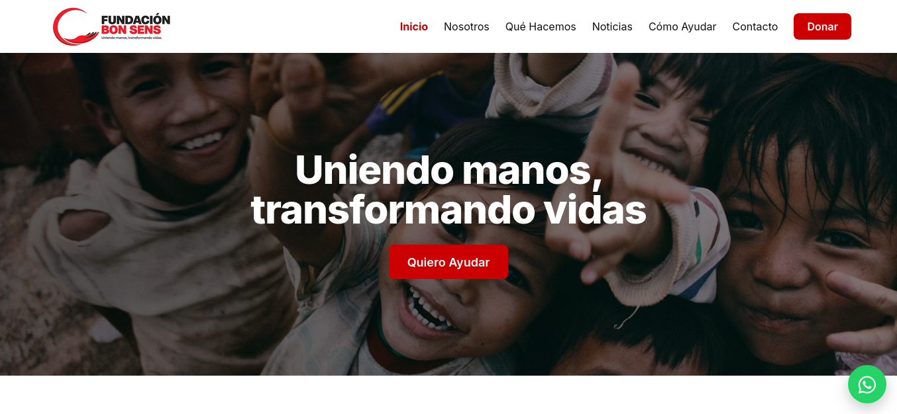
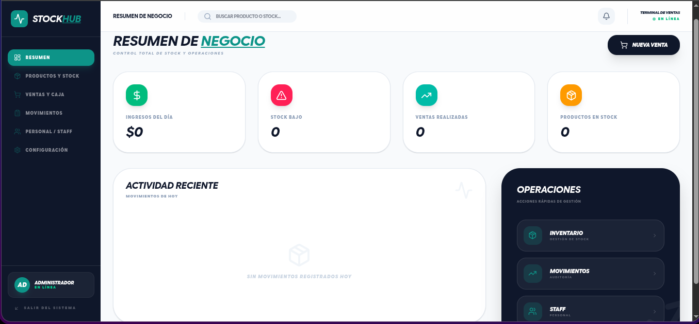
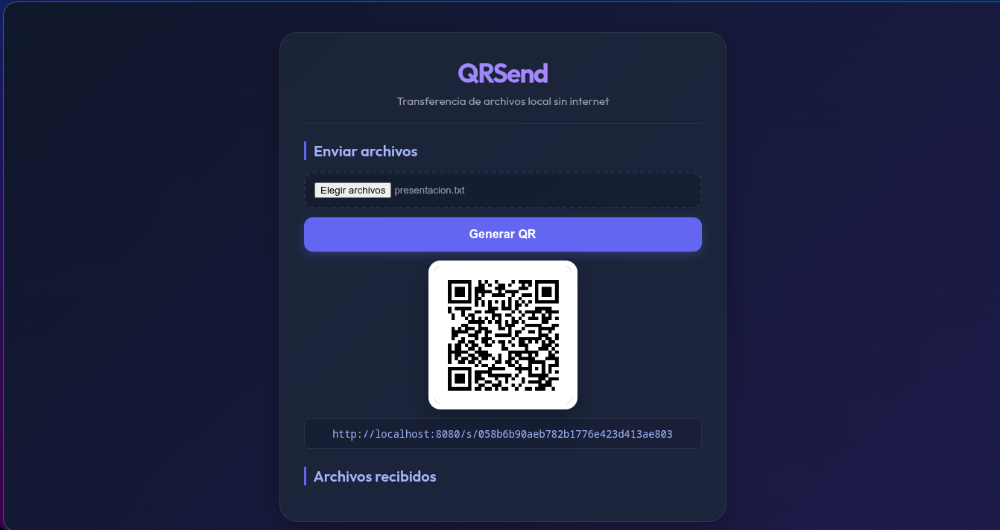
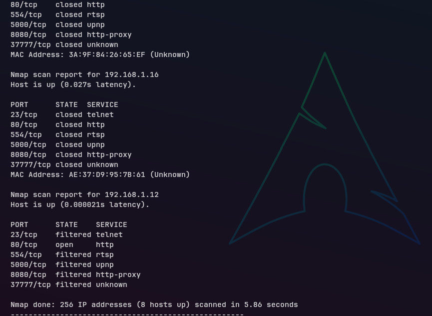

Desarrollo sistemas, automatizo procesos y despliego infraestructura Linux.
Estudiante de Ingeniería en Informática especializado en Android nativo, Linux, IoT y desarrollo backend.
Trabajo de Ingeniería

Fundación Bon Sens (DevOps)
Orquestación e infraestructura local para plataforma web transaccional. Configuración de contenedores aislados (Apache, PHP y Postgres) con scripts bash de arranque (`entrypoint.sh`) y automatizaciones de base de datos.

Punto de Venta e Inventarios
Sistema POS full-stack para el control de existencias en comercios. Cuenta con sistema de alertas críticas de stock mínimo, integración directa con lectores físicos de código de barras y exportación de comprobantes.
Automatización de Caudal IoT
Firmware en C++ para ESP32 diseñado para interactuar con hardware físico (electroválvula y caudalímetro). Controla el flujo hídrico recibiendo órdenes vía Bluetooth Serial desde la aplicación cliente.

QRSend (Servicio LAN)
Servicio de red local portable compilado en un binario autocontenido. Permite el traspaso de archivos en redes inalámbricas locales sin conexión a internet mediante códigos de emparejamiento QR y sockets de datos.

Netscan
Escáner de red local modular diseñado para auditar la seguridad interna de routers y dispositivos locales. Automatiza el descubrimiento de cámaras IP vulnerables, protocolos UPnP y puertos abiertos.
Áreas de Especialidad
Administración Linux
- Arch Linux (Entorno diario)
- Automatización en Bash
- Configuración Hyprland / TWMs
- Systemd / Gestión de Servicios
- Monitoreo de Recursos (btop)
Operaciones & Cloud
- Contenedores Docker
- Docker Compose
- Gestión básica en AWS
- Bases de datos (Postgres / SQLite)
- Despliegue continuo (Render)
Redes & Ciberseguridad
- Escaneo y auditoría (Nmap)
- Mapeo de puertos locales
- Análisis UPnP y vulnerabilidades
- Divulgación Responsable
- Resolución de fallas de red
Scripting & IoT
- C++ (Lógica ESP32 / Arduino)
- Python (Scripts utilitarios)
- Go / Kotlin (Herramientas CLI)
- Bluetooth Serial / Telemetría
- PlatformIO
Sobre Ángel Noriega
Estudiante de Ingeniería en Informática | Desarrollo Backend, Linux e IoT. Mi fuerte técnico está en la administración de entornos Linux, la orquestación de sistemas, la seguridad a nivel de red y el uso de scripts de consola para automatizar tareas rutinarias.
Considero la programación como una herramienta para construir integraciones, desarrollar scripts funcionales e implementar firmware sobre microcontroladores (como el ESP32 para proyectos IoT), priorizando la simplicidad y la seguridad del sistema.
Iniciar una conversación
Ponte en contacto si necesitas automatizar tareas, orquestar servicios con Docker, configurar entornos locales o revisar la seguridad de un segmento de red.